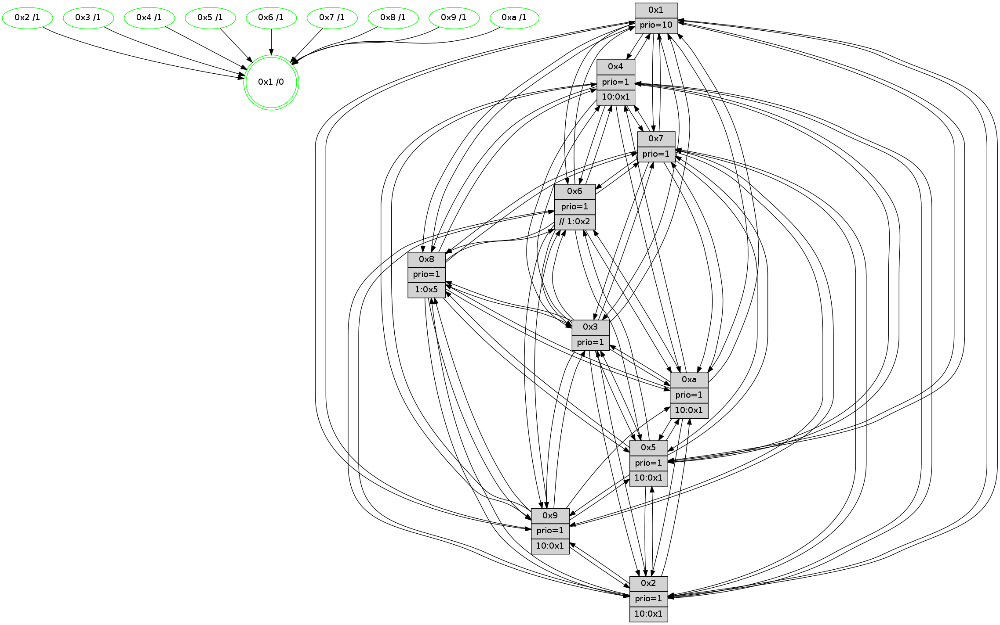

>> << IDX [start] -100 -25 -5 +0 +5 +25 [1590.08875799]
 Previous packets
----------------------------------------------------------------------
1585.359970 beacon01(faad) #0 coord=01,02,03,04,05,06,07,0a,09,08 cycle=688.0ms assoc
-- color-indic=1 64 26 34
1585.369952 beacon02(faad) #0 coord=01,02,03,04,05,06,07,0a,09,08 cycle=688.0ms assoc 64 b5 05
1585.379952 beacon03(faad) #0 coord=01,02,03,04,05,06,07,0a,09,08 cycle=688.0ms assoc 64 cf 48
1585.389954 beacon04(faad) #0 coord=01,02,03,04,05,06,07,0a,09,08 cycle=688.0ms assoc 64 b8 a2
1585.399953 beacon05(faad) #0 coord=01,02,03,04,05,06,07,0a,09,08 cycle=688.0ms assoc 64 c2 ef
1585.409954 beacon06(faad) #0 coord=01,02,03,04,05,06,07,0a,09,08 cycle=688.0ms assoc 64 4c 38
1585.419955 beacon07(faad) #0 coord=01,02,03,04,05,06,07,0a,09,08 cycle=688.0ms assoc 64 36 75
1585.429958 beacon0a(faad) #0 coord=01,02,03,04,05,06,07,0a,09,08 cycle=688.0ms assoc 64 47 7e
1585.449959 beacon08(faad) #0 coord=01,02,03,04,05,06,07,0a,09,08 cycle=688.0ms assoc 64 b3 e4
1585.461183 [Hello(8): seq=954 sym=5,2,3,7,9,6,4,10,1 sysInfo=hasWarning stat=5:1,8,10,4/2:10,4,4,15/3:11,14,8,6/7:4,12,5,1/9:1,6,11,8/6:6,15,5,4/4:12,12,15,3/10:10,7,2,6/1:8,11,5,0]
1585.464957 [Color(5) seq=535 @0:0 prio=1 >10.@1,1.@6,1.@7,1.@8]
1585.466677 [Hello(7): seq=1010 sym=2,3,5,6,8,4,9,10,1 sysInfo=hasWarning stat=2:3,7,14,7/3:5,14,3,6/5:6,13,14,6/6:15,14,14,0/8:12,6,6,2/4:14,15,4,2/9:2,12,8,4/10:2,5,0,0/1:4,6,0,0]
1585.470135 [Color(7) seq=517 @0:0 prio=1]
1585.472451 [Hello(10): seq=943 sym=6,2,3,8,7,5,9,4,1 sysInfo=hasWarning stat=6:6,8,15,8/2:14,13,2,3/3:4,2,9,15/8:1,15,4,7/7:0,2,0,0/5:4,14,7,4/9:14,7,4,1/4:5,1,11,5/1:0,14,3,1]
1585.475848 [STC(1) #0.287 tree-change,inconsistent-stability,stable,to-color d=0]
1585.477808 [Color(1) seq=690 @0:0 prio=10]
1585.479592 [Hello(4): seq=1010 sym=5,8,6,2,3,9,7,10,1 sysInfo=hasWarning stat=5:4,1,15,5/8:14,2,4,0/6:10,10,10,5/2:12,13,0,4/3:0,0,8,1/9:8,12,2,5/7:15,8,6,1/10:10,6,10,0/1:4,1,2,1]
1585.482361 [Hello(9): seq=954 sym=2,5,3,4,7,6,8,10,1 sysInfo=hasWarning stat=2:13,9,2,14/5:0,11,8,1/3:12,13,0,7/4:3,1,8,5/7:5,5,1,1/6:11,8,15,4/8:3,5,9,10/10:15,3,12,1/1:12,5,5,1]
1585.484838 [Color(10) seq=587 @0:0 prio=1 >10.@1,1.@5,1.@6,1.@7]
1585.487878 [Color(9) seq=536 @0:0 prio=1 >10.@1,1.@5,1.@6,1.@7]
1585.491643 [Color(4) seq=527 @0:0 prio=1 >10.@1,1.@2,1.@3,1.@5]
----------------------------------------------------------------------
1586.148103 beacon01(faad) #0 coord=01,02,03,04,05,06,07,0a,09,08 cycle=688.0ms assoc
-- color-indic=1 64 e2 3a
1586.158085 beacon02(faad) #0 coord=01,02,03,04,05,06,07,0a,09,08 cycle=688.0ms assoc 64 71 0b
1586.168084 beacon03(faad) #0 coord=01,02,03,04,05,06,07,0a,09,08 cycle=688.0ms assoc 64 0b 46
1586.178086 beacon04(faad) #0 coord=01,02,03,04,05,06,07,0a,09,08 cycle=688.0ms assoc 64 7c ac
1586.188086 beacon05(faad) #0 coord=01,02,03,04,05,06,07,0a,09,08 cycle=688.0ms assoc 64 06 e1
1586.198086 beacon06(faad) #0 coord=01,02,03,04,05,06,07,0a,09,08 cycle=688.0ms assoc 64 88 36
1586.208086 beacon07(faad) #0 coord=01,02,03,04,05,06,07,0a,09,08 cycle=688.0ms assoc 64 f2 7b
1586.218092 beacon0a(faad) #0 coord=01,02,03,04,05,06,07,0a,09,08 cycle=688.0ms assoc 64 83 70
1586.238091 beacon08(faad) #0 coord=01,02,03,04,05,06,07,0a,09,08 cycle=688.0ms assoc 64 77 ea
1586.250305 [STC(7)->1 #0.287 tree-change,inconsistent-stability,stable,to-color d=1]
1586.252672 [Hello(1): seq=920 sym=4,2,9,5,10,3,8,6,7 sysInfo=coloring-mode-on,ColoringModeRequestCalled stat=4:13,8,13,5/2:0,6,8,8/9:4,11,10,5/5:9,13,15,12/10:14,4,2,9/3:12,2,2,13/8:8,2,7,8/6:6,14,11,6/7:10,8,1,3]
1586.255285 [TreeStatus(7)-.->1 #0.287 tree-change,inconsistent-stability,stable child=1]
1586.256486 [Hello(6): seq=1011 sym=3,2,5,4,7,9,8,10,1 sysInfo=hasWarning stat=3:1,2,1,0/2:11,14,8,2/5:1,6,3,7/4:5,3,12,12/7:9,3,15,2/9:9,5,1,13/8:11,5,6,11/10:14,6,11,0/1:8,14,4,1]
1586.261547 [STC(6)->1 #0.287 new-neigh,tree-change,inconsistent-stability,stable,to-color d=1]
1586.262947 [Hello(5): seq=1011 sym=7,6,4,2,1,9,8,10,3 sysInfo=hasWarning stat=7:0,15,4,2/6:0,4,3,3/4:0,2,7,1/2:12,10,3,1/1:15,9,15,0/9:7,13,1,14/8:4,0,9,9/10:1,12,4,12/3:15,7,5,0]
1586.265442 [TreeStatus(6)-.->1 #0.287 new-neigh,tree-change,inconsistent-stability,stable child=1]
1586.266996 [Hello(3): seq=1011 sym=1,7,6,2,4,8,9,10,5 sysInfo=hasWarning stat=1:9,12,9,0/7:10,14,5,1/6:2,4,0,0/2:15,11,3,0/4:8,12,4,1/8:1,11,11,10/9:2,14,13,3/10:8,6,4,7/5:11,8,9,4]
1586.270004 [Hello(2): seq=1007 sym=4,5,7,6,3,9,8,10,1 sysInfo=hasWarning stat=4:9,9,12,1/5:6,9,15,5/7:13,2,4,4/6:9,13,1,0/3:15,3,5,0/9:3,5,9,12/8:3,11,9,1/10:3,8,10,14/1:13,11,15,0]
1586.274114 [STC(3)->1 #0.287 tree-change,inconsistent-stability,stable,to-color d=1]
1586.276256 [STC(5)->1 #0.287 tree-change,inconsistent-stability,stable,to-color d=1]
1586.278072 [STC(2)->1 #0.287 tree-change,inconsistent-stability,stable,to-color d=1]
1586.279406 [Color(3) seq=640 @0:0 prio=1]
1586.281625 [Color(2) seq=571 @0:0 prio=1]
1586.283506 [Color(6) seq=643 @0:0 prio=1 >>1.@2,1.@3,1.@5]
1586.288169 [STC(8)->1 #0.287 tree-change,inconsistent-stability,stable,to-color d=1]
1586.292044 [Color(8) seq=598 @0:0 prio=1 >1.@5,1.@6,1.@7,1.@9]
----------------------------------------------------------------------
1586.936233 beacon01(faad) #0 coord=01,02,03,04,05,06,07,0a,09,08 cycle=688.0ms assoc
-- color-indic=1 64 5e 3f
1586.946216 beacon02(faad) #0 coord=01,02,03,04,05,06,07,0a,09,08 cycle=688.0ms assoc 64 cd 0e
1586.956216 beacon03(faad) #0 coord=01,02,03,04,05,06,07,0a,09,08 cycle=688.0ms assoc 64 b7 43
1586.966217 beacon04(faad) #0 coord=01,02,03,04,05,06,07,0a,09,08 cycle=688.0ms assoc 64 c0 a9
1586.976215 beacon05(faad) #0 coord=01,02,03,04,05,06,07,0a,09,08 cycle=688.0ms assoc 64 ba e4
1586.986217 beacon06(faad) #0 coord=01,02,03,04,05,06,07,0a,09,08 cycle=688.0ms assoc 64 34 33
1586.996217 beacon07(faad) #0 coord=01,02,03,04,05,06,07,0a,09,08 cycle=688.0ms assoc 64 4e 7e
1587.006222 beacon0a(faad) #0 coord=01,02,03,04,05,06,07,0a,09,08 cycle=688.0ms assoc 64 3f 75
1587.026221 beacon08(faad) #0 coord=01,02,03,04,05,06,07,0a,09,08 cycle=688.0ms assoc 64 cb ef
1587.039689 [Hello(8): seq=955 sym=5,2,3,7,9,6,4,10,1 sysInfo=hasWarning stat=5:1,9,10,4/2:10,4,4,15/3:11,14,8,6/7:5,13,6,1/9:2,7,11,8/6:6,15,5,4/4:13,13,15,3/10:11,8,2,6/1:8,12,6,0]
1587.043053 [Hello(7): seq=1011 sym=2,3,5,6,8,4,9,10,1 sysInfo=hasWarning stat=2:4,8,15,7/3:6,15,4,6/5:7,13,15,6/6:0,15,15,1/8:13,7,7,2/4:15,0,4,2/9:3,13,8,4/10:3,6,0,0/1:4,7,1,0]
1587.045868 [Color(5) seq=536 @0:0 prio=1 >10.@1,1.@6,1.@7,1.@8]
1587.049228 [Color(7) seq=518 @0:0 prio=1]
1587.053550 [Hello(10): seq=944 sym=6,2,3,8,7,5,4,1 sysInfo=hasWarning stat=6:7,9,0,9/2:15,14,3,3/3:5,3,10,15/8:2,0,5,7/7:0,2,1,1/5:5,14,8,4/4:5,2,11,5/1:1,14,3,1]
1587.057356 [Color(4) seq=528 @0:0 prio=1 >10.@1,1.@2,1.@3,1.@5]
1587.059267 [TreeStatus(10)-.->1 #0.286 new-neigh,tree-change,inconsistent-stability,stable child=1]
1587.060998 [TreeStatus(9)-.->1 #0.286 new-neigh,tree-change,inconsistent-stability,stable child=1]
1587.063156 [Color(9) seq=537 @0:0 prio=1 >10.@1,1.@5,1.@6,1.@7]
1587.074605 [Color(10) seq=588 @0:0 prio=1 >10.@1,1.@5,1.@6,1.@7]
----------------------------------------------------------------------
1587.724363 beacon01(faad) #0 coord=01,02,03,04,05,06,07,0a,09,08 cycle=688.0ms assoc
-- color-indic=1 64 4a 51
1587.734344 beacon02(faad) #0 coord=01,02,03,04,05,06,07,0a,09,08 cycle=688.0ms assoc 64 d9 60
1587.744344 beacon03(faad) #0 coord=01,02,03,04,05,06,07,0a,09,08 cycle=688.0ms assoc 64 a3 2d
1587.754345 beacon04(faad) #0 coord=01,02,03,04,05,06,07,0a,09,08 cycle=688.0ms assoc 64 d4 c7
1587.764346 beacon05(faad) #0 coord=01,02,03,04,05,06,07,0a,09,08 cycle=688.0ms assoc 64 ae 8a
1587.774345 beacon06(faad) #0 coord=01,02,03,04,05,06,07,0a,09,08 cycle=688.0ms assoc 64 20 5d
1587.784345 beacon07(faad) #0 coord=01,02,03,04,05,06,07,0a,09,08 cycle=688.0ms assoc 64 5a 10
1587.794350 beacon0a(faad) #0 coord=01,02,03,04,05,06,07,0a,09,08 cycle=688.0ms assoc 64 2b 1b
1587.814350 beacon08(faad) #0 coord=01,02,03,04,05,06,07,0a,09,08 cycle=688.0ms assoc 64 df 81
1587.825288 [Hello(1): seq=921 sym=4,2,9,5,10,3,8,6,7 sysInfo=coloring-mode-on,ColoringModeRequestCalled stat=4:13,9,13,5/2:1,7,9,8/9:4,12,10,6/5:10,14,0,12/10:15,5,2,10/3:13,3,3,13/8:9,3,8,8/6:7,15,12,7/7:10,9,1,4]
1587.829280 [Hello(5): seq=1012 sym=7,6,4,2,1,9,8,10,3 sysInfo=hasWarning stat=7:0,0,4,2/6:0,5,3,3/4:0,3,7,1/2:12,11,4,1/1:15,9,15,0/9:8,14,1,15/8:5,1,10,9/10:1,13,4,13/3:15,8,5,0]
1587.832005 [Hello(6): seq=1012 sym=3,2,5,4,7,9,8,10,1 sysInfo=hasWarning stat=3:1,2,1,0/2:11,14,8,2/5:1,7,3,7/4:5,4,12,12/7:10,4,0,2/9:9,6,1,14/8:12,6,7,11/10:15,7,11,1/1:9,14,4,1]
1587.834819 [Color(6) seq=644 @0:0 prio=1 >>1.@2,1.@3,1.@5]
1587.836621 [Hello(3): seq=1012 sym=1,7,6,2,4,8,9,10,5 sysInfo=hasWarning stat=1:10,13,9,0/7:10,15,6,1/6:2,5,0,0/2:15,12,3,0/4:8,13,4,1/8:2,12,12,10/9:2,15,13,4/10:9,7,4,8/5:11,9,9,4]
1587.839762 [TreeStatus(3)-.->1 #0.287 new-neigh,tree-change,inconsistent-stability,stable child=1]
1587.841007 [TreeStatus(5)-.->1 #0.287 new-neigh,tree-change,inconsistent-stability,stable child=1]
1587.842751 [TreeStatus(8)-.->1 #0.287 new-neigh,tree-change,inconsistent-stability,stable child=1]
1587.845533 [Color(8) seq=599 @0:0 prio=1 >1.@5,1.@6,1.@7,1.@9]
1587.851189 [Hello(2): seq=1008 sym=4,5,7,6,3,9,8,10,1 sysInfo=hasWarning stat=4:9,10,12,1/5:6,10,15,5/7:14,3,5,4/6:9,14,1,0/3:15,3,5,0/9:3,6,9,13/8:4,12,10,1/10:3,9,10,15/1:13,11,15,0]
1587.854014 [TreeStatus(2)-.->1 #0.287 new-neigh,tree-change,inconsistent-stability,stable child=1]
1587.856806 [Color(2) seq=572 @0:0 prio=1 >10.@1,1.@3,1.@4,1.@5]
1587.863552 [Color(3) seq=641 @0:0 prio=1]
----------------------------------------------------------------------
1588.512495 beacon01(faad) #0 coord=01,02,03,04,05,06,07,0a,09,08 cycle=688.0ms assoc
-- color-indic=1 64 f6 54
1588.522478 beacon02(faad) #0 coord=01,02,03,04,05,06,07,0a,09,08 cycle=688.0ms assoc 64 65 65
1588.532478 beacon03(faad) #0 coord=01,02,03,04,05,06,07,0a,09,08 cycle=688.0ms assoc 64 1f 28
1588.542477 beacon04(faad) #0 coord=01,02,03,04,05,06,07,0a,09,08 cycle=688.0ms assoc 64 68 c2
1588.552479 beacon05(faad) #0 coord=01,02,03,04,05,06,07,0a,09,08 cycle=688.0ms assoc 64 12 8f
1588.562479 beacon06(faad) #0 coord=01,02,03,04,05,06,07,0a,09,08 cycle=688.0ms assoc 64 9c 58
1588.572479 beacon07(faad) #0 coord=01,02,03,04,05,06,07,0a,09,08 cycle=688.0ms assoc 64 e6 15
1588.582483 beacon0a(faad) #0 coord=01,02,03,04,05,06,07,0a,09,08 cycle=688.0ms assoc 64 97 1e
1588.602483 beacon08(faad) #0 coord=01,02,03,04,05,06,07,0a,09,08 cycle=688.0ms assoc 64 63 84
1588.614668 [Hello(8): seq=956 sym=5,2,3,7,9,6,4,10,1 sysInfo=hasWarning stat=5:1,10,10,4/2:11,5,4,0/3:11,15,8,6/7:6,14,6,1/9:2,8,11,9/6:6,15,5,4/4:13,14,15,3/10:12,9,2,7/1:9,12,6,0]
1588.617715 [Color(5) seq=537 @0:0 prio=1 >10.@1,1.@6,1.@7,1.@8]
1588.619765 [Hello(10): seq=945 sym=6,2,3,8,7,5,4,1 sysInfo=hasWarning stat=6:8,10,0,9/2:0,15,3,4/3:6,4,10,0/8:3,1,5,8/7:0,2,1,1/5:6,14,8,5/4:5,2,11,5/1:2,14,3,1]
1588.622326 [Hello(9): seq=956 sym=2,5,3,4,7,6,8,10,1 sysInfo=hasWarning stat=2:15,11,3,15/5:2,11,9,2/3:14,15,1,8/4:3,2,8,5/7:5,5,2,2/6:13,10,0,5/8:5,7,10,11/10:15,4,12,1/1:14,5,5,1]
1588.626102 [Color(9) seq=538 @0:0 prio=1 >10.@1,1.@5,1.@6,1.@7]
1588.628678 [Color(10) seq=589 @0:0 prio=1 >10.@1,1.@5,1.@6,1.@7]
1588.631166 [Color(4) seq=529 @0:0 prio=1 >10.@1,1.@2,1.@3,1.@5]
1588.633472 [Hello(7): seq=1012 sym=2,3,5,6,8,4,9,10,1 sysInfo=hasWarning stat=2:5,9,15,8/3:7,0,4,7/5:8,13,15,7/6:1,0,15,1/8:14,8,7,3/4:15,1,4,2/9:3,14,8,5/10:4,7,0,1/1:5,7,1,0]
1588.638230 [Color(7) seq=519 @0:0 prio=1]
----------------------------------------------------------------------
1589.300627 beacon01(faad) #0 coord=01,02,03,04,05,06,07,0a,09,08 cycle=688.0ms assoc
-- color-indic=1 64 32 5a
1589.310610 beacon02(faad) #0 coord=01,02,03,04,05,06,07,0a,09,08 cycle=688.0ms assoc 64 a1 6b
1589.320611 beacon03(faad) #0 coord=01,02,03,04,05,06,07,0a,09,08 cycle=688.0ms assoc 64 db 26
1589.330610 beacon04(faad) #0 coord=01,02,03,04,05,06,07,0a,09,08 cycle=688.0ms assoc 64 ac cc
1589.340610 beacon05(faad) #0 coord=01,02,03,04,05,06,07,0a,09,08 cycle=688.0ms assoc 64 d6 81
1589.350609 beacon06(faad) #0 coord=01,02,03,04,05,06,07,0a,09,08 cycle=688.0ms assoc 64 58 56
1589.360612 beacon07(faad) #0 coord=01,02,03,04,05,06,07,0a,09,08 cycle=688.0ms assoc 64 22 1b
1589.370614 beacon0a(faad) #0 coord=01,02,03,04,05,06,07,0a,09,08 cycle=688.0ms assoc 64 53 10
1589.380617 beacon09(faad) #0 coord=01,02,03,04,05,06,07,0a,09,08 cycle=688.0ms assoc 64 dd c7
1589.390617 beacon08(faad) #0 coord=01,02,03,04,05,06,07,0a,09,08 cycle=688.0ms assoc 64 a7 8a
1589.402151 [Hello(5): seq=1013 sym=7,6,4,2,1,9,8,10,3 sysInfo=hasWarning stat=7:1,1,4,2/6:0,5,3,3/4:1,4,7,1/2:13,12,4,2/1:0,9,15,0/9:9,15,1,15/8:6,2,10,10/10:1,14,4,13/3:15,9,5,0]
1589.405836 [Hello(3): seq=1013 sym=1,7,6,2,4,8,9,10,5 sysInfo=hasWarning stat=1:11,14,9,0/7:11,0,6,1/6:2,5,0,0/2:15,12,3,0/4:8,14,4,1/8:3,12,12,10/9:2,0,13,4/10:10,8,4,8/5:12,10,9,4]
1589.412482 [Hello(1): seq=922 sym=4,2,9,5,10,3,8,6,7 sysInfo=coloring-mode-on,ColoringModeRequestCalled stat=4:13,10,13,5/2:2,8,9,9/9:4,13,10,6/5:11,14,0,13/10:15,6,2,10/3:14,4,3,14/8:10,4,8,9/6:8,0,12,7/7:11,10,1,4]
1589.415010 [Color(6) seq=645 @0:0 prio=1 >>1.@2,1.@3,1.@4]
1589.416936 [Color(8) seq=600 @0:0 prio=1 >1.@5,1.@6,1.@7,1.@9]
1589.420171 [Hello(2): seq=1009 sym=4,5,7,6,3,9,8,10,1 sysInfo=hasWarning stat=4:10,11,12,1/5:6,11,15,5/7:15,4,5,4/6:9,14,1,0/3:15,4,5,0/9:4,7,9,13/8:5,12,10,1/10:3,10,10,15/1:14,11,15,0]
1589.423311 [Color(2) seq=573 @0:0 prio=1 >10.@1,1.@3,1.@4,1.@5]
1589.429967 [STC(1) #0.288 new-neigh,tree-change,inconsistent-stability,stable,to-color d=0]